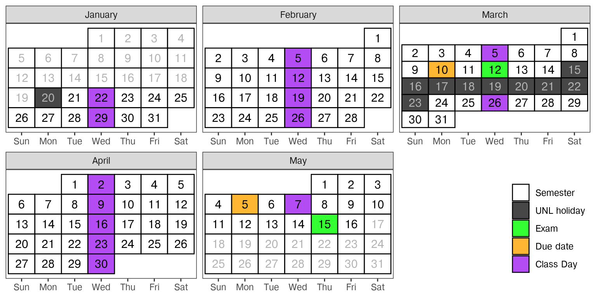

Syllabus
Course Description
Introduction to programming for statistical analysis. Covers basic programming concepts necessary for statistics, good computing practice, and use of built-in functions to complete basic statistical analyses.
Course Objectives
At the end of this course, students will
- Be comfortable using R and/or python for statistical analysis
- Write basic programs using logic including for loops and control structures
- Implement basic data analyses in R or python
- Describe the sequence of steps necessary to solve a simple problem
- Be familiar with good computing practices, such as version control and documentation
Textbook
The primary textbook for this course is one that I have developed from other resources listed below. It is available for free at . It is under construction/a work in progress, so it may be hard to work more than a couple of weeks ahead in this class using the primary textbook.
In addition, you may find it useful to reference some of the following resources that I have consulted while assembling the textbook. Most are available online for free, though some require an institutional email address.
Python for Data Analysis - Available online for free if you register with your UNL email address.
Python Data Science Handbook - Available online for free if you register with your UNL email address.
Class Schedule & Topic Outline
This schedule is tentative and subject to change. Students are expected to read the corresponding textbook chapter (linked in Canvas) before coming to class. For the most part, for each week’s topic, there will be one or two corresponding textbook chapters.
| Week | Topic | Important Notes |
|---|---|---|
| 1 | Setting Up | |
| 2 | Scripts and Notebooks | |
| 3 | Intro to Programming | |
| 4 | Building Blocks | |
| 5 | Data Structures | |
| 6 | Control Structures | |
| 7 | Functions | |
| 8 | Midterm | HW Resub Deadline: Mar 10 (11:59pm) |
| 8 | Midterm | Midterm Exam: Mar 12 (In Class) |
| 9 | Version Control | |
| 10 | Graphics | |
| 11 | Data Cleaning | |
| 12 | Strings | |
| 13 | Reshaping Data | |
| 14 | Good Charts | |
| 15 | Review | HW Resub Deadline: May 05 (11:59pm) |
| 16 | Finals | Final Exam: May 15 (1-3 pm) |
Course Policies
Assessment/Grading
| Assignments | Weight |
|---|---|
| Reading Quizzes | 10% |
| Attendance & Participation | 10% |
| Weekly Homeworks | 40% |
| Midterm Exam | 20% |
| Final Exam | 20% |
Lower bounds for grade cutoffs are shown in the following table. I will not “round up” grades at the end of the semester.
| Letter grade | X + | X | X - |
|---|---|---|---|
| A | 97.0 | 94.0 | 90.0 |
| B | 87.0 | 84.0 | 80.0 |
| C | 77.0 | 74.0 | 70.0 |
| D | 67.0 | 64.0 | 61.0 |
| F | <61.0 |
Interpretation of this table: A grade of 84.3 will receive a B. A grade of 77.6 will receive a C+. A grade of 73.9 will receive a C-. Anything below a 61 will receive an F.
Reading Quizzes
You will have weekly reading assignments which introduce the weekly focus area and provide different perspectives on the material. Some of these perspectives will be covered in class and used in homework assignments, but some will not be used right away. It is still important for you to read about them and file that information away for a time when it is useful.
In order to motivate the importance of doing the weekly reading before class, you will be given a weekly reading quiz on Canvas which covers the requisite material. These quizzes will be due before the first class of the week (so, at 1 PM on Wednesday).
No late quizzes will be accepted, and quizzes will lock and become inaccessible automatically at the start of class. It is to your advantage to do the reading well before class so that you do not miss out on credit for the quizzes.
Attendance & Participation
All students are expected to attend and fully participate in class. Participation grades will be determined based on a combination of attendance and participation. Consistent, repeated failure to attend class or actively participate in the course will affect the participation portion of your grade.
One absence is allowed without any reduction in participation score - no excuse is necessary!
Illness
If you are feeling ill, please do not come to class. Instead, review the material and work on the homework assignment, and then schedule an appointment with me to meet virtually. In the appointment reason field on Calendly, indicate that this appointment is to substitute for your in-class participation on the date you missed.
If you need to miss more than 1-2 classes for illness, I reserve the right to require documentation from Disability Services or a medical provider in order to continue using this substitute for attendance grades.
Inclement Weather
If in-person classes are canceled, you will be notified of the instructional continuity plan for this class by Canvas Announcement. In most circumstances where there is power in the Lincoln area, we will hold class via Zoom if the university cancels class. You will be held to the same participation standards on Zoom as you are in person, and participation and attendance will be graded accordingly, with some allowance for disruption at the individual level where circumstances warrant.
Exams
Two exams will be given during the course of the semester. Exams will require that you write code to solve problems utilizing the course material.
Exam Make-up policies
You are expected to take exams at the scheduled times.
If this is impossible due to extreme circumstances (illness, death in the family, previously scheduled activities vital to academic program), please notify me and provide appropriate documentation.
- No accommodations for missed exams will be given if I am not notified at least 24h prior to the exam date.
If you miss the midterm due to extreme circumstances, I reserve the right to replace the weight of the midterm with the final exam, rather than offering you a make-up exam.
Final exam times are published at the beginning of the semester. The final exam for this course is scheduled at May 15, 2025 01:00 PM. I will not schedule a make-up exam unless required to by university policy (e.g. you have 3+ exams on the same day) or if there are extreme circumstances (severe illness, sudden death in the immediate family, etc.). I work extremely hard to get exams graded quickly so that everyone can get final grades; make-up exams delay this process for everyone.
Homework
Approximately 12-15 homework assignments will be made over the course of the semester. You will have one week to work on each assignment. The only way to learn statistics is to practice working problems, and homework is therefore an essential part of the course. Homework must be submitted in the file format specified, and should run or compile on my machine with no changes.
Late Policy
Late homework will be accepted only under extenuating circumstances, and only if you have contacted me prior to the assignment due date and received permission to hand the assignment in late. I reserve the right not to grade (or to assign a 0 to) any assignments received after the assignment due date.
You may submit an assignment that was not submitted in time as a resubmission, assuming it meets the conditions outlined in the next section.
Homework Resubmission Policy
Learning how to program is a process that is ongoing. I want you to not be afraid to make mistakes. As a result, I allow you to re-submit homework over the course of the semester in order to make corrections and respond to my initial feedback.
Note: The resubmission policy does NOT apply to quizzes, exams, or projects.
This policy is subject to the following constraints:
You should resubmit assignments as soon as possible.
You may not resubmit an assignment for which solutions have been posted.
Each assignment should be resubmitted only once.
Resubmissions are due no later than 2 weeks after the initial due date. In addition,
- Resubmissions from weeks 1-7 must be submitted by Monday of week 8 of classes
- Resubmissions from weeks 9-14 must be submitted by Monday of week 15 of classes
Resubmitted assignments will be graded at my convenience.
I spend the extra time grading resubmissions because it reinforces your learning; this policy is not designed to improve your grade in this class.
I reserve the right to adjust the resubmission policy over the course of the semester to ensure that it is meeting the objective of reinforcing your learning.
I reserve the right to limit or penalize resubmissions if it becomes clear that the current policy does not promote learning of the material and/or support the course objectives.
In general, this policy means that I will typically not post assignment solutions, though you are welcome to visit office hours to ask questions about an assignment. ### General Grading Policies
Assignment Evaluation Criteria
In every assignment, discussion, and written component of this class, you are expected to demonstrate that you are intellectually engaging with the material. I will evaluate you based on this engagement, which means that technically correct but low effort answers which do not demonstrate engagement or understanding will receive no credit.
When you answer questions in this class, your goal is to show that you either understand the material or are actively engaging with it. If you did not achieve this goal, then your answer is incomplete, regardless of whether or not it is technically correct. This is not to encourage you to add unnecessary complexity to your answer - simple, elegant solutions are always preferable to unwieldy, complex solutions that accomplish the same task.
While this is not an English class, grammar and spelling are important, as is your ability to communicate technical information in writing; both of these criteria will be used in addition to assignment-specific rubrics to evaluate your work.
Assignment Oral Exams
I reserve the right to fully or partially replace any written assignment grade with a grade based on an oral discussion of your submitted solutions. If you cannot explain how your solution works, why it is correct, and the logic behind how you got to your solution, then you will not receive credit.
Process:
I will contact you and ask you to schedule an appointment with me to discuss
.
This email request does NOT indicate that you are suspected of an academic integrity violation. There are many reasons I request an oral exam, and academic integrity issues are not as common as issues such as suspecting you misunderstood the question or approach.This discussion may take place on zoom or in person, at my discretion.
You must schedule an appointment within 24 hours; the appointment time must be within 3 business days of the original email.
This ensures that oral exams don’t unduly delay results being returned to the whole class.I reserve the right to record the meeting to use in academic integrity proceedings.
Explanation With the proliferation of AI tools such as Chat-GPT, as well as the old-fashioned “find solutions online and copy them without understanding how they work”, assessing your understanding of programming concepts can be difficult. This assessment is what you are paying tuition for - I need to be able to both assess your understanding and provide you with feedback about your learning progress. This is best accomplished interactively, with a back-and-forth oral discussion.
This policy is designed to accomplish several objectives:
- Allows for alternate assessment methods in cases of e.g. test anxiety
- Gain additional insight into how you got to a solution and why
- Explore potential misunderstandings of question phrasing
- Obtain a more nuanced understanding of your grasp of specific programming concepts
AI Policy
Chat GPT can be a useful tool, but this course’s objectives are meant to assess your ability to program in R and Python, not your ability to use AI systems. Fundamentally, you need to understand concepts and develop some syntactic fluency to program effectively; generative AI solutions may hamper both of these goals if you rely on them too much.
It is fine to use AI to explain how some code works.
It is not fine to ask AI for the solution to your homework assignment.
Ultimately, if you can’t explain how you got to your solution in a logical manner, you will not receive credit.
Expectations
You can expect me to:
- reply to emails within 48 hours during the week (72 hours on weekends)
- be available in class to assist with assignments
- be available by appointment for additional help or discussion
I expect you to:
- Read and attempt to understand the module material and watch any videos before coming to class
- Engage with the material and your classmates during class
- Seek help when you do not understand something
- Communicate promptly if you anticipate that you will have trouble meeting deadlines or participating in a portion of the course.
- Do your own troubleshooting before contacting me for help (and mention things you’ve already tried when you do ask for help!)
- Be respectful and considerate of everyone in the class
Make Mistakes!
Programming is the process of making a series of silly or stupid mistakes, and then slowly fixing each mistake (while adding a few more). The only way to know how to fix these mistakes (and avoid them in the future) is to make them. (Sometimes, you have to make the same mistake a few dozen times before you can avoid it in the future).
At some point during the class, you will find that you’ve spent 30 minutes staring at an error caused by a typo, a space, a parenthesis in the wrong place. You may ask for help debugging this weird error, only to have someone immediately point out the problem… it is always easier to see these things in someone else’s code. This is part of programming, it is normal, and you shouldn’t feel embarrassed or apologize (unless you put no effort into troubleshooting the problem before you asked for help).
If you manage to produce an error I haven‚Äôt seen before, then congratulations! üëè You have achieved something special, and that achievement should be celebrated. üéâ Each new and bizarre error is an opportunity to learn a bit more about the programming language, the operating system, or the interaction between the two.
Programming is frustrating. It’s ok to take a break, walk around, or even lightly threaten your computer. The flip side is that solving those incredibly frustrating problems can be really fun. I expect you to experience both the highs and the lows of programming this semester.
Required University Information
See .